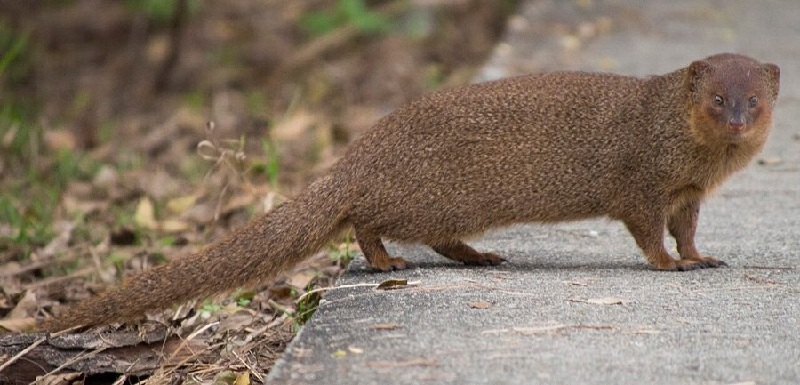

स्मॉल इंडियन मंगूसSmall Indian Mongoose
Herpestes javanicus · Herpestidae · MAM-0042

- Scientific name वैज्ञानिक नाम
- Herpestes javanicus (É. Geoffroy Saint-Hilaire, 1818)
- Family कुल
- Herpestidae
- Hindi हिंदी
- स्मॉल इंडियन मंगूस
- Local names स्थानीय नाम
- small indian mongoose, small asian mongoose, gold-spotted mongoose
- Status here यहाँ की स्थिति
- native
- Movement आवागमन
- Resident, here all year
- Known from कहाँ दर्ज
- Others have published records from the Basti–Ayodhya districts बस्ती–अयोध्या के ज़िलों से दूसरों के प्रकाशित अभिलेख
- IUCN IUCN
- LC
- Review समीक्षा
- not yet reviewed
When to look कब देखें
Present all year. साल भर मौजूद।
Tell it apart from इनसे अलग पहचानें
स्मॉल इंडियन मंगूस / Small Indian Mongoose
Herpestes javanicus (É. Geoffroy Saint-Hilaire, 1818) — Herpestidae
स्मॉल इंडियन मंगूस — खेतों की मेड़ों, झाड़ियों और बंजर भूमि में फुर्ती से दौड़ने वाला एक छोटा मांसाहारी स्तनपायी जीव है। इसका शरीर पतला, पैर छोटे और पूंछ नुकीली होती है। इसका फर महीन और घने भूरे-जैतूनी रंग का होता है जिस पर सुनहरे-पीले बारीक छींटे चमकते हैं। यह भारतीय धूसर नेवले से आकार में काफी छोटा होता है और दिन के समय चूहों, छिपकलियों, कीड़ों तथा सांपों का शिकार करता हुआ दिखाई देता है।
Quick Identification त्वरित पहचान
| Feature | Description |
|---|---|
| Habit | Slender, agile, solitary small carnivore of fields, open scrub, and village environs |
| Body Size | Distinctly smaller and more delicately built than the Common Grey Mongoose |
| Pelage | Olive-brown or grizzled grey-brown, speckled throughout with fine golden-yellow flecks |
| Muzzle | Pointed, slender muzzle with a bare, flesh-coloured or dark pink rhinarium |
| Ears | Small, rounded, and closely flattened against the sides of the head |
| Legs | Very short limbs terminating in sharp, slightly curved fossorial claws |
| Tail | Tapering tail shorter than the head and body, lacking an expanded black or red tip |
Field tip: Look along field borders, canal dykes, and thorn hedges for a low, swift, scurrying silhouette. The finely speckled golden-brown coat, smaller build, and lack of a bushy white or red tail tip distinguish it from the larger Common Grey Mongoose.
हिंदी:
यह आम नेवले की तुलना में काफी छोटा और छरहरे बदन वाला होता है।
इसके भूरे बालों पर सुनहरे-पीले बारीक धब्बे होते हैं जिससे इसकी चमड़ी चितकबरी दिखती है।
इसकी पूंछ आगे से पतली होती है और उसके सिरे पर कोई अलग रंग का गुच्छा नहीं होता।
Morphology आकारिकी
Measurements as given by Blanford (1891):
| Measurement | Range |
|---|---|
| Head, body and tail | Head and body 10 to 12 inches, tail, without hair at end, 7 to 10 (Blanford 1891 as Herpestes auropunctatus) |
The Small Indian Mongoose is characterized by an elongated, low-slung, cylindrical body supported by short, muscular legs. The snout is sharply pointed with a naked pinkish-brown rhinarium. The eyes are small, with reddish-amber irises and horizontal pupils.
The pelage is short, sleek, and closely appressed, consisting of soft woolly underfur intermixed with harsher guard hairs. Each guard hair has alternating dark brown and pale yellowish-golden rings, creating a finely punctated or grizzled golden-brown appearance across the dorsal surface.
The underparts are somewhat paler, usually dirty buff or pale greyish-yellow. The tail is thick at the base and tapers steadily toward the pointed tip, without the loose bushy flare seen in larger congeners. The paws bear five digits armed with sharp, semi-fossorial claws suitable for excavating rodent burrows.
Vocalisations. When foraging peacefully, individuals produce low chuckling, clucking, and chirping sounds. When startled or cornered, they emit explosive hissing, snarling spit-calls, and high-pitched yapping barks.
हिंदी:
सिर और धड़ की लंबाई 10 से 12 इंच और पूंछ 7 से 10 इंच तक होती है।
इसका शरीर लंबा, बेलनाकार और पैर छोटे होते हैं जिससे यह जमीन से सटकर तेजी से भागता है।
खतरा महसूस होने पर यह बिल्ली की तरह फुफकारता है और तीखी चीख निकालता है।
Behaviour & Ecology व्यवहार और पारिस्थितिकी
Herpestes javanicus is primarily diurnal, actively hunting throughout the morning and late afternoon hours while resting during the peak midday heat. It is an inquisitive and opportunistic forager, constantly probing crevices, under logs, and beneath agricultural crop debris with its keen snout.
The species is mostly solitary, although pairs or mothers escorting grown young may sometimes be encountered. Individuals occupy home ranges that encompass field bunds, shrub thickets, and drainage lines, using scent-marking from anal glands along prominent stones and paths to delineate territory.
हिंदी:
यह मुख्यतः दिन के समय सक्रिय रहता है और खेतों तथा झाड़ियों में लगातार शिकार खोजता रहता है।
यह अकेले रहना पसंद करता है और पत्थरों तथा पेड़ों की जड़ों पर गंध छोड़कर अपनी सीमा तय करता है।
Life Cycle / Phenology जीवन चक्र
Blanford (1888, p. 122) found nothing particular recorded about this form beyond that its habits, so far as known, resemble those of the common mongoose; of that species he wrote that very little was known of its breeding-habits, that it lives and breeds in holes dug by itself, and that the young are produced in the spring (Blanford 1888, p. 124).
It is an active, inquisitive little animal, frequently seen in the daytime about bushes, hedgerows, and cultivated fields (Blanford 1888, p. 122).
हिंदी:
ब्लैनफोर्ड (1888, पृ. 122) के अनुसार इसके बारे में विशेष कुछ दर्ज नहीं है, सिवाय इसके कि इसकी आदतें सामान्य नेवले जैसी हैं; सामान्य नेवला अपने खोदे बिलों में रहता है और वसंत में बच्चे देता है (पृ. 124)।
यह दिन के समय झाड़ियों और खेतों में सक्रिय रहता है।
Host Plants or Prey आहार
The Small Indian Mongoose is a versatile opportunistic predator consuming a wide array of small animal prey:
- Rodents including field mice (Mus booduga), rats (Rattus), and gerbils (Tatera indica)
- Ground-dwelling reptiles, particularly skinks, calotes lizards, and small colubrid snakes
- Invertebrates including crickets, grasshoppers, ground beetles, scorpions, and centipedes
- Ground birds' eggs and fledglings, frogs, and fallen sweet fruits of Ziziphus and Syzygium
हिंदी:
इसका मुख्य भोजन जंगली चूहे, छिपकलियां, टिड्डे, बिच्छू, छोटे सांप और जमीन पर रहने वाले पक्षियों के अंडे हैं।
Predators / Natural Enemies शत्रु व परभक्षी
Raptors, owls, and larger carnivores take carnivores of this size. No source opened for this atlas names a specific predator of this species.
हिंदी:
शिकारी पक्षी, उल्लू और बड़े मांसाहारी जानवर इस आकार के छोटे जीवों को पकड़ लेते हैं। इस एटलस के लिए खोले गए किसी स्रोत में इस प्रजाति के किसी विशिष्ट शिकारी का नाम नहीं है।
Agricultural / Human Relevance कृषि व मानव संदर्भ
The Small Indian Mongoose is a small carnivore feeding on rodents, reptiles, insects, and eggs (Blanford 1891, p. 123). It is protected under the Wildlife (Protection) Act, 1972.
हिंदी:
स्मॉल इंडियन मंगूस एक छोटा मांसाहारी जीव है, जो चूहों, सरीसृपों, कीड़ों और अंडों को खाता है (ब्लैनफोर्ड 1891)। यह वन्यजीव (संरक्षण) अधिनियम, 1972 के तहत संरक्षित है।
Expected Locally स्थानीय रूप से अपेक्षित
Not a field record. Written from published accounts for eastern Uttar Pradesh. No confirmed local sighting yet — if you have seen it, that is what the atlas needs.
अभी तक स्थानीय पुष्टि नहीं। यह विवरण प्रकाशित स्रोतों से है, किसी अवलोकन से नहीं।
Search along scrub-fringed field bunds, village hedgerows, and irrigation ditch banks.
GBIF holds published records from these districts.
A first record would be a photograph of an active individual with place and date, sent through the About page.
Distribution वितरण
Global and historical range: Native across southern Asia, from Iran, Afghanistan, and Pakistan eastwards through northern and central India, Nepal, Bhutan, Bangladesh, Myanmar, and parts of mainland Southeast Asia. Widely introduced historically to Caribbean and Pacific islands.
Regional status: Resident across open agricultural tracts, scrub jungles, and village interfaces of the Awadh and Purvanchal plains of eastern Uttar Pradesh.
हिंदी:
यह पूरे भारत, पाकिस्तान, नेपाल और दक्षिण-पूर्व एशिया में व्यापक रूप से पाया जाता है।
अवध और पूर्वांचल के ग्रामीण इलाकों और खेतों की मेड़ों में यह आम रूप से देखा जाता है।
Research Questions शोध प्रश्न
- What are the dietary overlaps and spatial partitioning between Herpestes javanicus and the sympatric Indian Grey Mongoose along agricultural edges? / कृषि क्षेत्रों में छोटे नेवले और धूसर नेवले के बीच आहार और क्षेत्र के बंटवारे का क्या स्वरूप है?
- How does the intensity of chemical rodenticide application in sugarcane fields affect small mongoose population survival? / गन्ने के खेतों में चूहामार दवाओं के इस्तेमाल से छोटे नेवले की संख्या पर क्या असर पड़ता है?
- What is the seasonal activity pattern of this species during peak summer and intense winter cold?
- How do linear hedgerows facilitate movement corridors for small carnivores across fragmented farm landscapes?
- Can scats collected along canal bunds be reliably differentiated between Herpestes javanicus and Herpestes edwardsii using DNA barcoding?
Similar Species मिलती-जुलती प्रजातियाँ
| Species | How to tell apart | हिंदी | |
|---|---|---|---|
| [[mongoose\ | Indian Grey Mongoose]] (Herpestes edwardsii) | Noticeably larger with coarser iron-grey grizzled pelage and a bushy, pale reddish-tipped tail | नेवला |
| [[small_indian_civet\ | Small Indian Civet]] (Viverricula indica) | Nocturnal viverrid with banded tail, dark body spots and longitudinal stripes; pointed ears | कस्तूरी बिलाव |
Field rule: The diminutive slender build, finely punctated golden-brown coat, tapering non-flared tail, and diurnal foraging habits distinguish the Small Indian Mongoose from other small carnivores.
हिंदी:
छोटा छरहरा आकार, बारीक सुनहरी चित्तीदार चमड़ी, बिना गुच्छे वाली पतली पूंछ और दिन में शिकार करना छोटे नेवले की खास पहचान हैं।
Taxonomy & Classification वर्गीकरण
Original description. Described by Étienne Geoffroy Saint-Hilaire in 1818 in Description de l'Égypte, Histoire Naturelle (vol. 2, p. 138), under the basionym Ichneumon javanicus.
Synonyms and historical names. Described under Mangusta auropunctata by Hodgson, which Blanford (1891, p. 121) and Pocock (1941, p. 29) recognized under Herpestes auropunctatus. While the GBIF taxonomic backbone lists the species under Herpestes javanicus, contemporary mammalian checklists frequently elevate the western taxon to full specific rank as Urva auropunctata.
Subspecies. Historically multiple races were named; northern Indian populations represent Herpestes auropunctatus auropunctatus (or Urva auropunctata).
Family and order placement. Order Carnivora; family Herpestidae (mongooses); genus Herpestes.
IUCN status rationale. Evaluated as Least Concern (LC) on the IUCN Red List because of its vast range, adaptability to human-altered landscapes, and stable demographic numbers across South Asia.
हिंदी:
इसका मूल विवरण 1818 में दिया गया था। भारत में इसे Herpestes auropunctatus के रूप में भी जाना जाता है। यह हर्पेस्टिडी कुल का सदस्य है और संकटमुक्त (LC) है।
Photo Gallery फोटो गैलरी
No photos yet — add field photos to media/species/small_indian_mongoose/ and run node scripts/sync_photos.js.
Photos needed आवश्यक फोटो
- [ ] Individual foraging along a vegetated field bund (खेत की मेड़ पर शिकार खोजता छोटा नेवला)
- [ ] Close-up showing finely speckled golden-brown coat and pointed head (सुनहरे धब्बेदार फर और चेहरे का चित्र)
References संदर्भ
- Geoffroy Saint-Hilaire, É. (1818). Description de l'Égypte, Histoire Naturelle, vol. 2. Imprimerie Impériale, Paris, p. 138 (as Ichneumon javanicus).
- Blanford, W. T. (1891). The Fauna of British India, Including Ceylon and Burma. Mammalia. Taylor & Francis, London, p. 121 (as Herpestes auropunctatus).
- Pocock, R. I. (1941). The Fauna of British India, Including Ceylon and Burma. Mammalia. Vol. 2. Taylor & Francis, London, p. 29 (as Herpestes auropunctatus).
- Menon, V. (2014). Indian Mammals: A Field Guide. Hachette India, Gurgaon.
- Chutipong, W. et al. (2016). Herpestes javanicus. The IUCN Red List of Threatened Species 2016: e.T70203940A45207619.
- Wildlife (Protection) Act, 1972 (as amended in 2022). Government of India, Schedule II.
- GBIF Occurrence Data — Herpestes javanicus (É. Geoffroy Saint-Hilaire, 1818), India (2025).
Source file: species/fauna/mammals/small_indian_mongoose.md